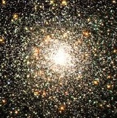

|
|
The Art of Computational ScienceMaya Open Lab |
 |
| © 2003-2005 Piet Hut and Jun Makino | Back to ACS home page. |
Other examples of dense stellar systems are the cores of centrally concentrated globular clusters, such as M15 and M30, where a typical star can also expect a collision on a time scale that is shorter than the age of the globular cluster. Some of the older open clusters, and many star forming regions are also called dense stellar systems, since there, too, stars can individually affect each other, through collisions or close passages.
In contrast, most stars in a typical galaxy, including our Sun, lead much less perturbed lives. For the Sun, the chance to collide with another star at any point during its life time is less than one in a million. This translates into a collision probability of only 10-16 per year. In our Milky Way galaxy as a whole, by far most stars, whether single or binaries or multiple systems, can be modeled in isolation.
Those stars that do reside in dangerously crowded areas lead far more interesting lives than those that live in the galactic suburbs and country side. And when two or more stars in a dense stellar system collide, their merger remnant looks and evolves quite different from garden variety stars. While normal stars start there life at the main sequence, a merger remnant is born in a rather different part of the Hertzsprung-Russell diagram. Even after an initial phase in which such a remnant settles into thermal equilibrium, the unusual mix of chemical composition as a function of radius will make such a stars markedly different in its evolution.
Observationally, some of these merger remnants will show up in the H-R diagram as blue stragglers: they are bluer than the turn-off, giving the semblance of being younger that the age of the other stars in their environment. And in a sense, they are younger, as counted from their collisional formation, even though their progenitors (or in the case of multiple collisions, their ancestors) can share the same age as the majority of stars in the cluster.
Theoretically, there is great interest in studying the weird variety of single stars and especially binary stars, that can be formed in dense stellar systems. Examples are Low-Mass X-ray Binaries and Millisecond Pulsars in orbit around other stars. Both types of systems occur in globular clusters with a far larger abundance than in the rest of the galaxy, an indication that most of them are formed through collisions or at least close encounters. In such encounters members in a binary can be swapped in a three-body or four-body encounter with other single stars or binaries.
In order to understand more about the most extreme states of matter, such as neutron stars and black holes, we can follow the same approach as particle physicists. They study their elementary particles by colliding them and by observing their bound states. Similarly, by observing neutron stars and possibly black holes in a globular cluster, we can get a handle on how they underwent collisions and how they are bound to other stars.
Especially in the case of black holes, there is no easy way to observe such an object when it is just moving around the cluster by itself. But if it is part of a close binary system, we can observe the hot gas around the black hole. Some of that gas will fall into the hole, and some of it may escape, possibly in the form of jets. In either case, X-ray observations can tell us a lot about the processes happening close to the black hole. Similarly, close binaries containing neutron stars provide great diagnostics for the structure and evolution of these stars.
The main goal of the Maya project is to provide detailed models both for the way stars interact locally through encounters and collisions, and for the way a whole star cluster evolves under the influence of such processes.